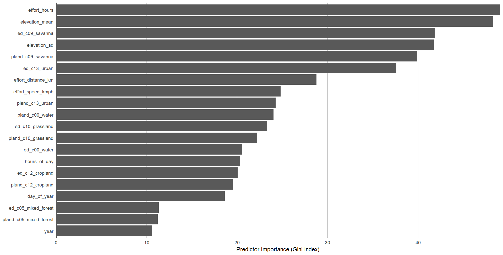
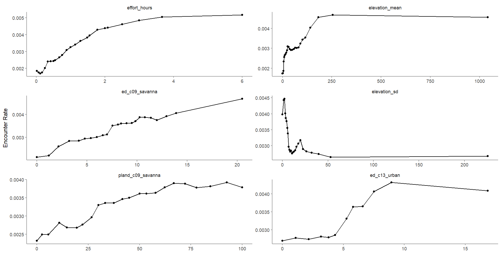
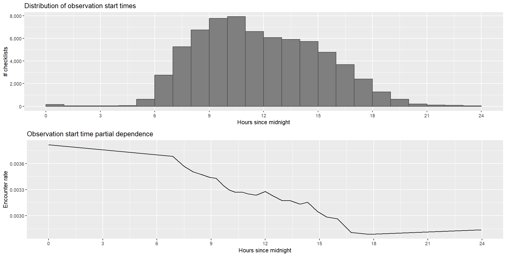
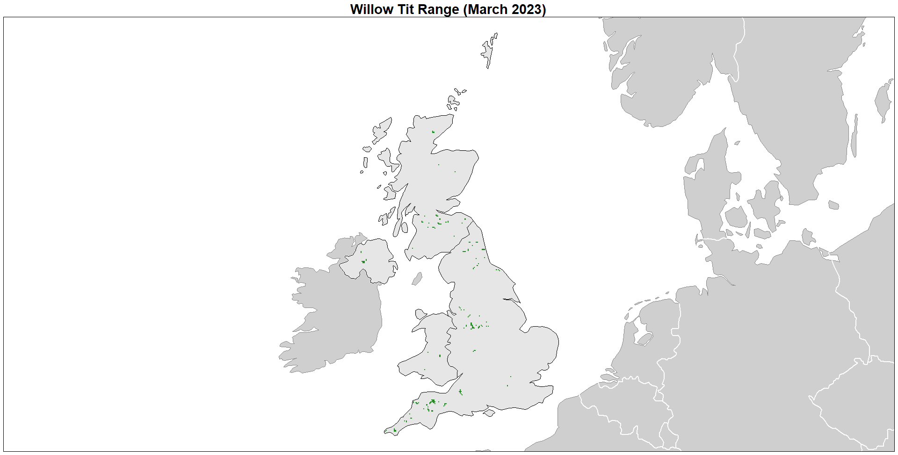
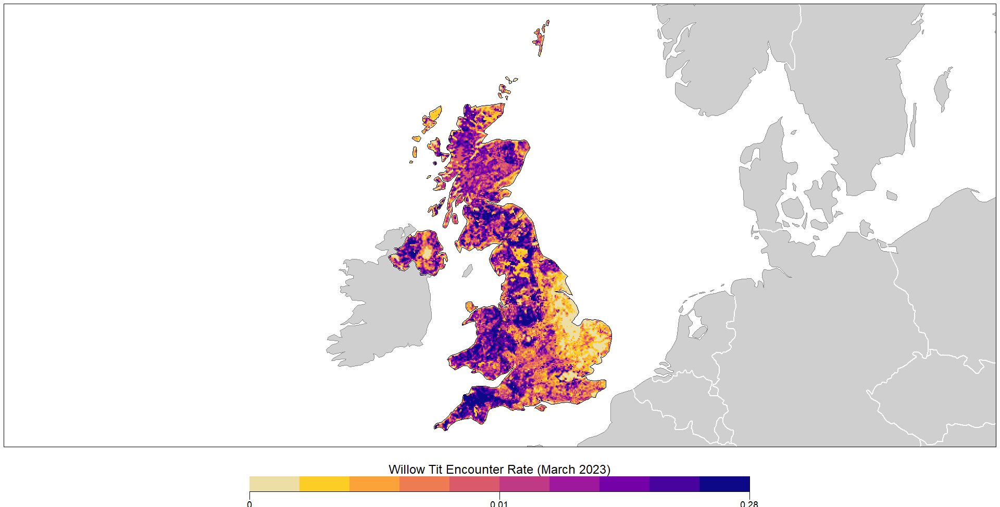

| name | value | description |
|---|---|---|
| mse | 0.007 | mean squared error |
| sensitivity | 0.498 | NA |
| specificity | 0.989 | NA |
| pr_auc | 0.152 | precision recall AUC |
| mcc | 0.367 | mean squared contingency coefficient |
| f1 | 0.360 | F score |
6 Encounter Rate
As stated previously, I am still getting to grips with the theory and application of species distribution models. The eBird Willow Tit data is an excellent resource to learn how such models work using real-world data. However, many of the decisions and parameters of the model may not be the most suitable for UK Willow Tit data. I am still learning how best to approach this. I am also happy for any insight. Please feel free to submit suggestions or comments on GitHub.
The encounter rate will measure the probability of an observer detecting a species during a standard birding session. In this case, it will be an eBird checklist. Ultimately, it is occupancy (the probability a species occurs at a site) that is most useful, but this is hard to measure with citizen-science data due to the variation in detectability. To address this, it can be useful to include effort covariates in the model so that the encounter rate is proportional to occupancy. Since Willow Tits in the UK are harder to detect, the encounter rate will be substantially lower than the occupancy rate.
The model developed by Strimas-Mackey (2023) et.al. addresses class imbalance and spacial bias through spatial subsampling. A balanced random forest model is then trained and calibrated before using it to predict encounter rates across the study area and mapping these. The calibration model is trained by predicting the encounter rate for each checklist in the training set, then fitting a binomial Generalized Additive Model (GAM) with the real observed encounter rate as the response and the predicted encounter rate as the predictor variable. The R code is available in the file EncounterRate.R.
Before the random forest model was calibrated and run, the data were sub-sampled to address spatial bias, temporal bias, and class imbalance (see Ch 3 Methodology). A grid of 3 km by 3 km square was made across the study region, then detections and non-detections were sub-sampled independently from the grid to ensure not too many detections were lost. To address temporal bias, one detection and one non-detection checklist were sampled from each grid cell for each week of each year.
6.1 Assessment of model
After running the calibrated random forest model, a set of predictive performance metrics were used to assess the model by comparing the predictions to the actual observations. The following PPMs resulted:
6.1.1 Mean squared error
This is the average distance between observed and predicted values. A value closer to 0 means a higher model accuracy. So a value of 0.007 means the model has a high accuracy predicting observations.
6.1.2 Sensitivity
This is the proportion of true presences that are correctly identified. A high value indicates the model is good at predicting where a species is actually present, but a very high value could mean over prediction. A value of 0.498 means the model is correctly identifying actual positives just under 50% of the time. This means the model is poor at identifying true positives.
6.1.3 Specificity
This is the proportion of true absences that are correctly identified. A high value indicates the model is good at predicting where a species is absent. A value of 0.988 means the model is correctly identifying true negatives 98% of the time and is therefore highly reliable.
6.1.4 Precision recall AUC
This is the proportion of predicted presences actually present plotted against the proportion of actual presences correctly predicted. A value of 0.152 means the model is very poor at identifying a positive presence.
6.1.5 Mean squared contingency coefficient
This is the measure of association between two binary (categorical) variables. A value of 0.367 means there is a some association between variables but they do not have a particularly strong association; there is still a degree of independence between them.
6.1.6 F score
This is the measure of predictive performance of the model, how well the model balances precision and recall. A value of 0.360 means the model is poor. In this case, it is missing many positive cases (low recall) as shown from the sensitivity score.
6.2 Habitat associations
Two additional measures were produced through fitting the random forest model: predictor importance and partial dependence.
6.2.1 Predictor importance
This is the measure of each variable to predict the presence of Willow Tits and gives an idea of which variables are most important.

The top six variables that affect Willow Tit detections are:
- Effort in hours
- Mean elevation
- Edge density savanna type (i.e. tree cover 10-30%, canopy >2m)
- Elevation standard deviation
- Landcover savanna type
- Edge density urban type (i.e. at least 30% impervious surface area)
These results are interesting and seems to fit with what is known about Willow Tits. The top variable is an effort variable, which is to be expected since Willow Tits are harder to detect than more common species. So the more time spent, the more likely one would observe a Willow Tit.
Effort is then followed by environmental variables which, perhaps, support the research that habitat is a vital factor for Willow Tits. That is, they require more specialised habitat than other common species. The model shows that elevation plays a role followed by 10-30% tree cover, both as part of a landscape’s edge and area. These fit well with what is known: that Willow Tits tend to be observed along edges such as scrub lines, and in areas of forest where there are lower canopies dominated by pioneer species (such as birch) which tend to be smaller or less dense.
6.2.2 Partial dependence
This estimates the marginal effect of one predictor holding all other predictors constant. These are calculated by predicting encounter rate at a regular sequence of points across the full range of values of a given predictor. Partial dependence has been calculated for the top six predictors.

Each graph shows the encounter rate (along the y-axis) for each predictor. These results seem consistent with what is known about the species, e.g. Willow Tits tend to be found at lower elevations, along edges, and where the landscape has a percentage of tree cover between 10-30%. There is also some suggestion that Willow Tits are found along the edges of urban areas.
6.3 Effort variables
In order to make predictions, effort variables will need to be added to the model. To do this, predictions for a standard eBird checklist will provide the paradigm. I have chosen to alter the suggested checklist guide of 2km at 1 hour travelling at peak time of day to better reflect the increased probability of effort, that is, spending longer birding. Therefore, I have chosen to use 2km at 2 hours traveling at peak time of day.
The peak time of day was found alongside partial dependence:

The first graph is the same as one created earlier in Chapter 4 Exploratory Analysis, and shows that the greatest number of checklists occur between 8:00-10:00. The second graph shows the encounter rate across the day. The first and last values were trimmed to maximise the encounter rate and avoid extrapolation. Based on this calculation, the peak time of day for detecting Willow Tits is 6.866 i.e. 06:51.
This time was then added to the effort variables (2km, 2 hours) to make predictions for the middle of the focal window of the latest year: 16 March 2023.
Range estimates were then made across the entire study area and mapped:

This map shows the expected range where Willow Tits would be encountered in March if birding across a 2km area for 2 hours. From the maps in Chapter 4, this shows a reduced area, albeit consistent with our understanding of the current range of Willow Tits.
The predicted encounter rate was then mapped for the entire study area:

This map shows more detail about predicted encounter rate (probability of an observer detecting a species during a standard birding session). Be aware that this is probably lower than occupancy rate (probability a species occurs at a site), but having applied effort and environmental variables, it is hoped that they are proportionate. Still, considering the decline of Willow Tits, the likelihood of detecting a species is still low.
6.4 Discussion
Considering the range is very similar to the current known picture, it perhaps tells us that there is already a good understanding of where Willow Tits occur. More importantly, it suggests areas that Willow Tits are currently not recorded, but could be prioritised for conservation efforts, specifically areas of Wales, Somerset, Devon, and Cornwall, as well as more areas of Scotland and Northern Ireland.